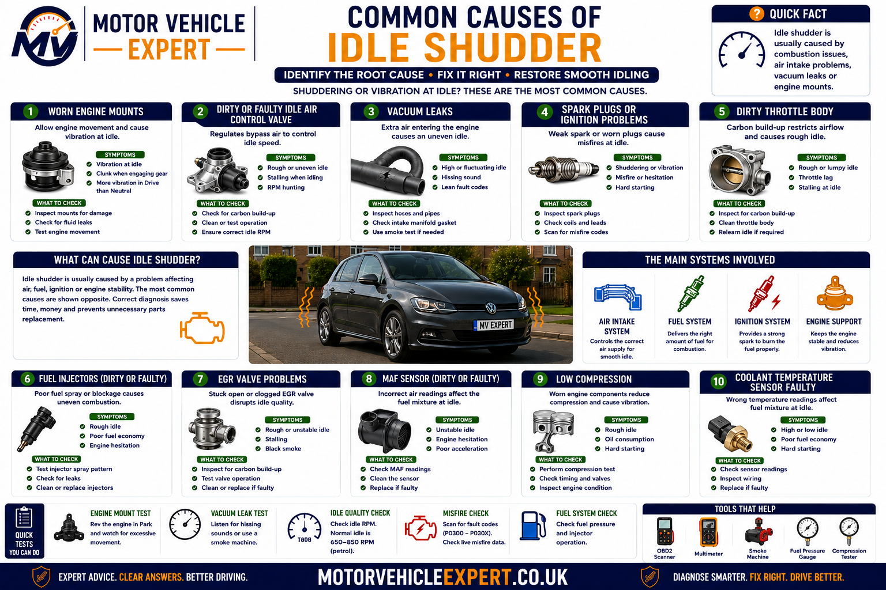
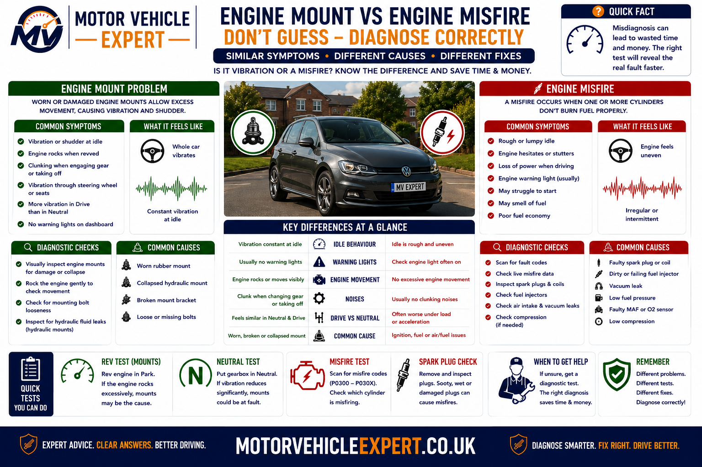
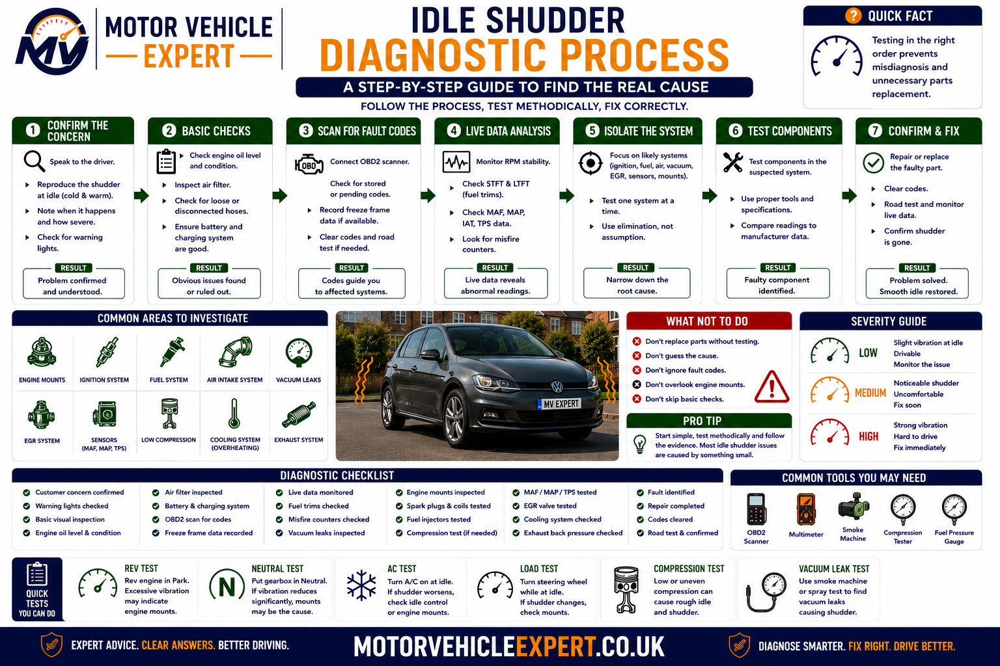
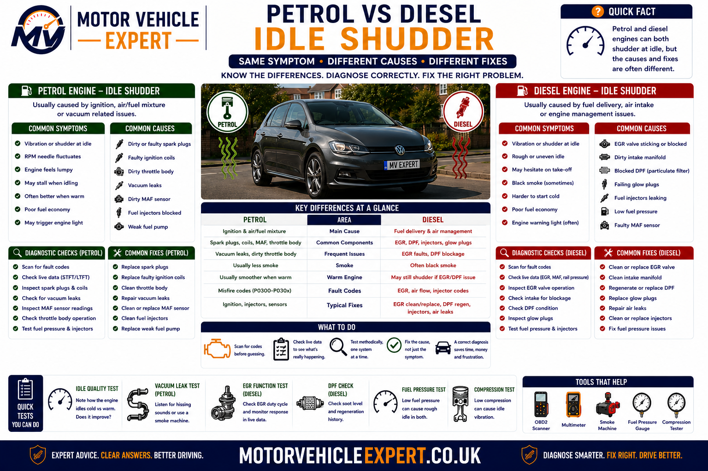
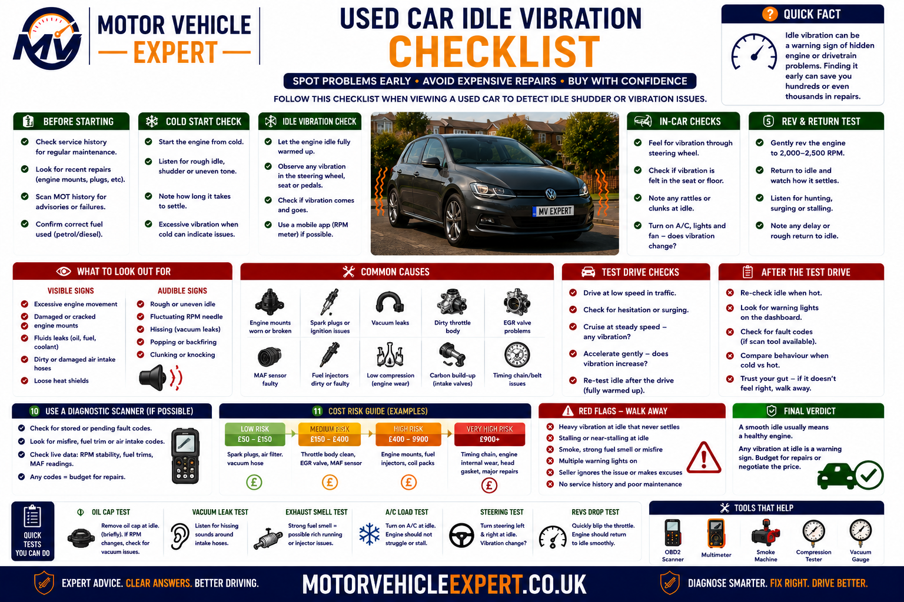
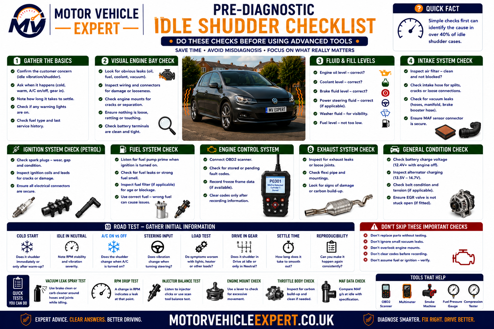

Use the Diagnostic App for Idle Shuddering
Idle vibration can come from engine mounts, rough combustion, throttle control, vacuum leakage, injectors, exhaust contact or automatic transmission load. The Motor Vehicle Expert diagnostic app can help you compare the symptom before replacing parts.
1. Match the Vibration Pattern
Record whether the revs remain steady, fluctuate, dip or nearly stall.
2. Compare Operating Conditions
Note cold idle, warm idle, AC load, Neutral, Drive and electrical-load changes.
3. Separate Mounts From Misfire
Compare cabin vibration with engine smoothness, exhaust rhythm and warning-light behaviour.
4. Judge the Urgency
Identify whether monitoring, prompt diagnosis or immediate recovery is appropriate.
Record whether the vibration changes when the air conditioning is switched on, Drive is selected, the steering is turned or electrical loads are added. These changes can identify whether the engine is failing to compensate for extra load or the vibration is simply being transferred through weak mounts.
Why Does a Car Shudder at Idle But Drive Fine?
A car usually shudders at idle but feels normal while driving because the fault is most noticeable at low engine speed. Common causes include worn engine or gearbox mounts, a small misfire, injector imbalance, a dirty throttle body, vacuum leaks, low idle speed, exhaust contact, air-conditioning load or automatic transmission load.
The rev counter and engine rhythm provide the most useful first clues. If the revs remain steady and the engine sounds smooth but the cabin vibrates, inspect mountings, exhaust contact and auxiliary components. If the revs hunt, dip or the exhaust note is uneven, investigate misfire, airflow, fuelling and idle-control faults.
Revs Steady, Cabin Shakes
More likely to involve engine or gearbox mounts, exhaust contact, auxiliary pulleys or normal vibration being transferred into the body.
Revs Hunt or Dip
More likely to involve throttle contamination, vacuum leaks, idle adaptation, airflow sensors or mixture-control faults.
Engine Runs Unevenly
More likely to involve spark plugs, ignition coils, injectors, fuel pressure, compression or EGR-related combustion faults.
Worse in Drive or With AC
Extra load may expose weak mounts, poor idle compensation, compressor drag or automatic transmission-related vibration.
Do not diagnose an engine mount simply because the cabin shakes. A mount transfers vibration; it does not create an uneven combustion event. Confirm whether the engine itself is running smoothly before replacing mountings.
A flashing warning can indicate a severe misfire capable of overheating the catalytic converter. Reduce engine load, stop safely if the warning continues and arrange diagnosis.
What Does Idle Shuddering Feel Like?
Idle shuddering is a vibration, shaking sensation or repeated movement felt while the vehicle is stationary and the engine is running. It may be noticeable through the steering wheel, seat, pedals, dashboard, floor or complete body shell.
The symptom often becomes less noticeable once the engine speed rises because combustion events occur more frequently and the engine moves away from its natural low-speed vibration range. This does not automatically mean the fault has disappeared.
Steering-Wheel Vibration
Often linked to engine vibration passing through mountings, brackets, steering components or the body structure.
Seat and Floor Shudder
Can indicate lower engine or gearbox mount deterioration, exhaust contact or drivetrain vibration.
Dashboard or Trim Buzz
Normal engine vibration may be amplified by worn mounts, loose trim, heat shields or components touching the body.
Repeated Engine Rocking
May indicate uneven combustion, excessive mounting movement or incorrect idle-speed control.
Idle Speed Dips and Recovers
More consistent with throttle, airflow, fuelling or idle-load compensation problems than a simple mount fault.
Vibration Disappears Above Idle
Common with weak mounts and minor cylinder imbalance because increased engine speed smooths the vibration frequency.
Engine Sounds Smooth but Cabin Shakes
- ✓ Engine speed remains steady.
- ✓ Exhaust rhythm sounds even.
- ✓ No misfire warning is present.
- ✓ Vibration changes in Drive or Reverse.
- ✓ Raising engine speed slightly reduces the vibration.
- ✓ Mounts, exhaust contact or auxiliary components become more likely.
Engine Rhythm Is Unstable
- ✓ Revs hunt, dip or fluctuate.
- ✓ Exhaust pulses sound uneven.
- ✓ Engine movement is irregular.
- ✓ Warning lights or fault codes may appear.
- ✓ Fuel economy or throttle response may worsen.
- ✓ Ignition, injectors, airflow and compression require checks.
A vibration concentrated in the steering wheel may follow a different path from one felt mainly through the seat or floor. Tell the technician where it is strongest and whether it changes when the engine, transmission or air conditioning is loaded.
Idle Shudder vs Rough Idle, Misfire and Judder
These terms are often used interchangeably, but they describe different parts of the driver experience. Separating the sensations helps determine whether the engine is running unevenly or normal vibration is being transferred into the cabin.
Idle Shudder
A repeated vibration felt while stationary, which may occur even when engine speed remains steady.
Rough Idle
The engine runs unevenly, with unstable speed, irregular combustion or a noticeable change in exhaust rhythm.
Engine Misfire
One or more cylinders fail to produce normal combustion, creating uneven crankshaft torque.
Judder
A lower-frequency shaking commonly associated with clutch engagement, drivetrain movement or mount loading.
| Driver description | Typical behaviour | First systems to consider |
|---|---|---|
| Cabin shudders but revs stay steady | Normal engine rhythm with strong vibration transfer | Engine mounts, gearbox mounts and exhaust contact |
| Idle speed hunts or dips | Engine control repeatedly corrects speed | Throttle body, vacuum leaks, MAF, MAP and fuelling |
| Engine rhythm is uneven | Individual combustion events are inconsistent | Ignition, injectors, compression and EGR |
| Vehicle shakes when Drive is selected | Additional transmission load exposes weakness | Mounts, idle compensation and torque converter |
| Vibration begins with AC operation | Compressor load changes engine demand | Idle control, mounts, belt drive and compressor |
| Metallic buzz accompanies vibration | Component resonates against the body | Heat shields, exhaust mounts and brackets |
A small misfire can make the engine run unevenly while a weak mount amplifies that vibration inside the cabin. Replacing only the mount may reduce the sensation without correcting the combustion fault.
Normal Engine Vibration vs a Genuine Idle Fault
Every running engine produces some vibration. Three-cylinder engines, diesels and vehicles with firm mountings may feel more noticeable at idle than larger or more refined engines. A fault is more likely where the vibration has increased, changes suddenly or is accompanied by other symptoms.
Normal Idle Characteristics
- ✓ Vibration has remained consistent over time.
- ✓ Engine speed is stable.
- ✓ Exhaust rhythm is smooth.
- ✓ No warning lights or fault messages appear.
- ✓ Driving performance and fuel economy are normal.
- ✓ No smoke, fumes or unusual noises are present.
Abnormal Idle Characteristics
- ! The vibration is new or becoming stronger.
- ! Revs hunt, dip or nearly stall.
- ! The exhaust note is irregular.
- ! Warning lights or codes are present.
- ! Fuel consumption or response has worsened.
- ! Fumes, smoke or mechanical noise appear.
Engine Design
Three-cylinder engines and some diesels naturally produce stronger low-speed vibration than smooth six-cylinder engines.
Mounting Design
Hydraulic, vacuum-controlled and active mountings can isolate vibration differently from conventional rubber mounts.
Vehicle Age
Rubber hardens, hydraulic mounts leak and exhaust supports weaken gradually, increasing cabin vibration over time.
The most useful reference is often whether the car now feels different from before. A vibration that has always been present may be characteristic, while a recent increase needs investigation.
When Does the Idle Shudder Occur?
The conditions that trigger or reduce the vibration can narrow the diagnosis considerably. Record engine temperature, transmission position, air-conditioning operation, electrical load and whether the steering is being turned.
Only During Cold Start
Ignition weakness, injector leakage, glow-system faults, compression loss and cold-start fuelling become more likely.
Only When Fully Warm
Heat-related ignition, fuel pressure, mount softening, catalyst restriction or transmission behaviour should be considered.
Only in Drive or Reverse
Additional torque-converter load may expose weak mounts, low idle compensation or transmission drag.
Only With AC On
Compressor load, belt-drive problems or weak idle-speed compensation become more likely.
Only With Steering Turned
Hydraulic power-steering load or electrical steering demand may expose low idle compensation.
Only With Electrical Loads
Charging-system load may reveal weak alternator bearings, voltage control or poor idle compensation.
Only at One Engine Speed
Resonance from mounts, exhaust contact or auxiliary components may occur within a narrow rpm range.
After Recent Repairs
Lost throttle adaptation, disconnected hoses, incorrect mounts or disturbed wiring should be checked.
Intermittently Without Pattern
Wiring, injector, ignition, purge, EGR and electronic-control faults may require data logging.
Compare Park, Neutral, Drive, AC off and AC on separately. This makes it easier to identify which added load causes the vibration to increase.
Cold vs Warm Idle Shuddering
Engine temperature changes fuelling, ignition timing, EGR operation, oil viscosity, mount stiffness and transmission-fluid behaviour. A fault that appears only at one temperature provides useful diagnostic direction.
Common Areas to Check
- ✓ Spark plugs and ignition coils.
- ✓ Diesel glow plugs and glow control.
- ✓ Injector leakage or poor atomisation.
- ✓ Intake and vacuum leakage.
- ✓ Compression and valve sealing.
- ✓ Coolant-temperature sensor plausibility.
Common Areas to Check
- ✓ Heat-sensitive ignition coils.
- ✓ Fuel-pump pressure when hot.
- ✓ Injector correction and mixture control.
- ✓ EGR operation at operating temperature.
- ✓ Mount softening and hydraulic-mount leakage.
- ✓ Torque-converter and transmission-fluid behaviour.
| Temperature pattern | Possible cause | Useful check |
|---|---|---|
| Rough only for the first few seconds | Injector leakage, ignition or cold-start control | Inspect cold-start misfire and fuelling data |
| Rough until the engine warms | Compression, vacuum leak or temperature input | Compare cold and warm trims and cylinder contribution |
| Smooth cold but rough when hot | Coil, fuel pressure, EGR or heat-related sensor fault | Record live data as temperature rises |
| Vibration increases as mounts warm | Hydraulic or softened mounting | Inspect mount height, leakage and movement |
| Rough only after long journeys | Fuel, catalyst, AC or transmission heat | Check temperature and pressure data immediately |
Where the fault occurs only from cold, leave the vehicle overnight before testing. Restarting a warm engine may prevent the technician from reproducing the complaint.
Why Is the Shudder Worse in Drive Than Neutral?
Selecting Drive or Reverse on an automatic vehicle applies load to the engine through the torque converter and transmission. The engine-control unit should compensate by adjusting airflow, ignition and fuelling to maintain stable idle speed.
Weak Engine Mount
Additional drivetrain torque can compress or twist a weak mount and transfer more vibration into the body.
Weak Gearbox Mount
Transmission loading can expose excessive mount movement or allow brackets and exhaust components to contact the body.
Low Idle Compensation
A dirty throttle body or adaptation problem may allow engine speed to dip when Drive is selected.
Torque-Converter Drag
Excessive converter or transmission drag can place abnormal load on the engine while stationary.
Underlying Misfire
A minor cylinder imbalance may become more noticeable when the transmission adds load.
Exhaust Contact
Engine movement in Drive or Reverse can make the exhaust touch a crossmember, heat shield or body panel.
Common Clues
- ✓ Revs remain steady in Drive.
- ✓ Engine sound remains smooth.
- ✓ Cabin vibration increases sharply.
- ✓ Reverse may feel different from Drive.
- ✓ Slightly raising revs reduces the vibration.
Common Clues
- ✓ Revs dip or hunt when Drive is selected.
- ✓ Engine rhythm becomes uneven.
- ✓ The engine nearly stalls.
- ✓ Throttle adaptation or mixture faults are present.
- ✓ Warning lights or misfire data may appear.
Comparisons between Park, Neutral, Drive and Reverse must be carried out safely with the parking brake applied and the service brake held firmly. Workshop diagnosis is preferable where the vibration is severe.
Why Does the Car Shudder More With the AC On?
The air-conditioning compressor requires engine power. When it engages, the control system should increase torque or airflow slightly to maintain stable idle. A weak engine, poor idle control, damaged mount or dragging compressor can make the load change obvious.
Normal Compressor Engagement
A slight momentary change in engine note can be normal when the compressor switches on.
Poor Idle Compensation
Dirty throttle control or incorrect adaptation may allow the revs to dip excessively.
Weak Engine Mount
Extra compressor load can increase normal engine movement and reveal a collapsed or hardened mounting.
Compressor Drag
Internal compressor wear or clutch problems can place excessive load on the auxiliary drive.
Belt Tensioner or Pulley
Worn bearings, weak tensioners or overrunning-pulley faults can vibrate as load changes.
Charging-System Load
Heated screens, blowers and lights increase alternator demand and can expose weak idle compensation or pulley faults.
| Load change | Observed result | Likely direction |
|---|---|---|
| AC switched on | Brief small rpm dip then recovery | May be normal operation |
| AC switched on | Strong continuous shudder | Mount, compressor or idle-control fault |
| Heated screens and blower added | Vibration and belt noise increase | Alternator pulley, tensioner or charging load |
| Steering turned at idle | Revs fall or engine nearly stalls | Idle compensation or steering-load issue |
| All loads removed | Vibration remains unchanged | Mount, misfire, exhaust or mechanical fault |
Rattling, chirping, grinding or visible belt movement when the AC or electrical load changes can point towards pulleys, tensioners, alternator clutches or compressor bearings.
Common Causes of a Car Shuddering at Idle
Idle shuddering can result from vibration transfer, uneven combustion, incorrect airflow, fuel imbalance, additional accessory load or drivetrain loading. The pattern of engine speed and exhaust rhythm helps identify the correct category.

A vibration felt in the cabin does not automatically prove a mounting fault. The engine must first be checked for smooth and balanced operation.
Engine Mount Wear
Split, collapsed or leaking mounts allow normal engine vibration to reach the body.
Gearbox Mount Wear
Transmission loading can move the drivetrain excessively and increase vibration in Drive or Reverse.
Petrol Engine Misfire
Spark plugs, coils, injectors or compression faults create uneven crankshaft torque.
Diesel Injector Imbalance
Uneven injector delivery or compression can make a diesel shake more strongly at idle.
Vacuum Leak
Unmetered air can create lean running, unstable idle speed and uneven combustion.
Dirty Throttle Body
Deposits disturb the small airflow required to control engine speed at idle.
MAF or MAP Fault
Incorrect airflow or pressure information can disturb mixture, EGR and idle control.
EGR Fault
Excessive or unstable exhaust-gas flow can cause rough combustion at low engine speed.
AC Compressor Load
Excessive drag or weak idle compensation can increase shaking when the air conditioning operates.
Auxiliary-Drive Fault
Pulleys, tensioners, belts and alternator clutches can create vibration and noise.
Exhaust Contact
Broken hangers or incorrect alignment can allow the exhaust to transmit vibration into the body.
Automatic Transmission Load
Converter drag, worn mounts or inadequate idle compensation can make the vehicle shake while stationary in gear.
A new mount may reduce cabin vibration while an ignition, injector or compression fault remains. Confirm stable engine speed, even exhaust rhythm and balanced cylinder contribution before condemning the mounting system.
Engine and Gearbox Mounts That Cause Idle Shuddering
Engine and gearbox mounts support the powertrain while isolating normal combustion vibration from the vehicle body. When a mount splits, collapses, hardens or loses its hydraulic fluid, more vibration can pass into the steering wheel, seat, floor and dashboard.
Mount faults are often most noticeable at idle because engine vibration occurs at a lower frequency. The symptom may become stronger when Drive or Reverse is selected, the air conditioning engages or the steering and electrical systems add load.
Collapsed Rubber Mount
The mount loses height and allows the engine or gearbox to sit closer to brackets, subframes and body panels.
Split Rubber Mount
Torn rubber allows excessive powertrain movement during gear selection, acceleration and load changes.
Leaking Hydraulic Mount
Fluid loss reduces vibration damping and may leave wet residue around the mounting.
Hardened Mounting Rubber
Age and heat can make the mount transmit vibration even when it is not visibly split.
Vacuum-Controlled Mount Fault
Some vehicles vary mount stiffness using vacuum control. Leaks, valves and control faults can reduce isolation.
Active Engine Mount Fault
Electronically controlled mounts may lose their ability to cancel or reduce specific vibration frequencies.
Gearbox Mount Wear
A weak transmission mount can make vibration worse when Drive, Reverse or clutch load is applied.
Torque-Reaction Mount Wear
Lower torque mounts restrict engine movement during load changes and can create knocking or shuddering when worn.
Incorrect Replacement Mount
A poor-quality, overly stiff or incorrectly fitted mounting can increase cabin vibration after repair.
More Likely When
- ✓ Engine speed remains steady.
- ✓ The exhaust rhythm sounds smooth.
- ✓ Cabin vibration is stronger than engine roughness.
- ✓ Drive or Reverse makes the vibration worse.
- ✓ A knock occurs during load changes.
- ✓ Slightly raising engine speed reduces the vibration.
How Mounts Are Assessed
- ✓ Rubber separation and cracking.
- ✓ Hydraulic-fluid leakage.
- ✓ Mount height and collapse.
- ✓ Controlled engine movement under load.
- ✓ Bracket, subframe and bolt condition.
- ✓ Exhaust and hose clearance during movement.
Do not stand in front of the vehicle or place hands near the engine while Drive, Reverse or clutch load is applied. Mount movement checks should be performed by a trained technician using the correct restraint and observation procedure.
Engine Mount Fault vs Engine Misfire
Engine mounts and misfires can both make the cabin shake, but they produce vibration for different reasons. A mount transfers normal engine movement into the body. A misfire creates uneven engine torque because one or more cylinders are not combusting normally.

A steady rev counter supports a mounting or vibration-transfer fault, while uneven engine rhythm and cylinder-specific data support a combustion fault.
More Likely When
- ✓ Revs remain stable.
- ✓ The exhaust note is even.
- ✓ The engine produces normal power.
- ✓ Cabin vibration changes with Drive or Reverse.
- ✓ Excessive mount movement or collapse is visible.
- ✓ No cylinder-specific misfire evidence is present.
More Likely When
- ✓ Engine speed fluctuates.
- ✓ Exhaust pulses are uneven.
- ✓ The engine rocks irregularly.
- ✓ Fuel economy or performance worsens.
- ✓ Warning lights or misfire codes appear.
- ✓ Cylinder contribution is unbalanced.
| Diagnostic clue | Mount fault pattern | Misfire pattern |
|---|---|---|
| Rev counter | Usually steady | May fluctuate or dip |
| Exhaust rhythm | Usually even | Often irregular |
| Driving performance | Usually normal | May hesitate or lose power |
| Warning lights | Usually absent | May illuminate or flash |
| Scan-tool evidence | No direct code for many rubber mounts | Misfire counts and cylinder codes may appear |
| Physical inspection | Collapse, leakage or excess movement | May show no obvious external damage |
| Effect of slight rpm increase | Vibration often reduces quickly | Roughness may remain or return under load |
A weak mount can amplify a small misfire. The correct repair may therefore require restoring smooth engine operation and replacing a mount that has already collapsed or deteriorated.
Spark Plugs and Ignition-Coil Faults at Idle
Petrol engines require each cylinder to ignite its air-fuel mixture consistently. Worn spark plugs, weak ignition coils, damaged coil boots and wiring faults can create a small misfire that is easiest to feel at idle.
Worn Spark-Plug Electrodes
Increased plug gap and rounded electrodes can weaken ignition and create intermittent combustion.
Fouled Spark Plug
Oil, fuel, carbon or coolant contamination can prevent a cylinder from firing consistently.
Weak Ignition Coil
Internal electrical faults can cause intermittent spark loss when hot, cold or under changing load.
Cracked Coil Boot
Spark energy can escape through damaged insulation, particularly where oil or moisture is present.
Coil Wiring Fault
Poor supply, ground, connector tension or trigger wiring can interrupt ignition.
Incorrect Spark-Plug Type
Wrong reach, resistance, heat range or gap can cause poor idle quality and component damage.
What the Driver May Notice
- ✓ Uneven engine rhythm.
- ✓ Intermittent shaking at idle.
- ✓ Fuel smell from the exhaust.
- ✓ Hesitation during acceleration.
- ✓ Engine-management warning.
- ✓ Worse operation when cold, hot or damp.
How the Fault Is Confirmed
- ✓ Cylinder-specific misfire data.
- ✓ Spark-plug condition and gap.
- ✓ Coil output or controlled substitution.
- ✓ Coil power, ground and trigger signals.
- ✓ Injector and compression checks where needed.
- ✓ Cold and warm symptom comparison.
Severe misfire allows unburned fuel into the exhaust and can overheat the catalytic converter. Stop driving if the warning continues flashing or the engine shakes severely.
Injector Imbalance and Fuel-Delivery Faults
Each injector must deliver the correct quantity of fuel at the correct time. A restricted, leaking or electrically faulty injector can make one cylinder contribute less than the others, creating an uneven idle that becomes smoother as engine speed rises.
Restricted Injector
Reduced fuel flow can make one cylinder run lean and produce less torque at idle.
Leaking Injector
Excess fuel can cause difficult starting, rich running, smoke and unstable combustion.
Injector Electrical Fault
Internal solenoid, piezo, connector or wiring faults can interrupt cylinder fuelling.
Weak Low-Pressure Pump
Insufficient supply pressure can affect idle stability, starting and acceleration.
High-Pressure Pump Fault
Direct-injection petrol and common-rail diesel systems require stable pressure at idle and under load.
Restricted Fuel Filter
Limited fuel flow may cause low pressure, hesitation and unstable cylinder delivery.
Pressure-Regulator Fault
Incorrect pressure control can cause hunting, rough idle and difficult starting.
Fuel Contamination
Water, debris or incorrect fuel can damage pumps and injectors and disturb combustion.
Electrical Supply Problem
Voltage drop, relays, poor grounds and damaged wiring can reduce pump or injector performance.
| Fuel-system clue | Possible cause | Useful test |
|---|---|---|
| One cylinder contributes less at idle | Injector, ignition or compression fault | Cylinder balance and contribution testing |
| Rough cold start followed by improvement | Leaking injector or cold-pressure problem | Leak-down and cold-start pressure checks |
| Idle hunts as fuel pressure changes | Pump, regulator or electrical fault | Graph requested and actual pressure |
| Diesel correction value is excessive | Injector or compression imbalance | Leak-off, compression and injector testing |
| Fuel smell and rich running | Leaking injector or pressure-control fault | Fuel trims, exhaust and injector sealing tests |
Diesel correction figures can change because of compression, fuel pressure and mechanical engine condition. Leak-off, electrical and cylinder tests should confirm the cause before injectors are replaced.
Vacuum and Intake Leaks That Disturb Idle
Petrol engines are particularly sensitive to unmetered air at idle because the intended airflow is small. A split hose, intake gasket, breather fault or brake-servo leak can therefore have a much stronger effect at idle than at higher engine speeds.
Split Vacuum Hose
Age, heat and oil contamination can crack small vacuum pipes and elbows.
Intake-Manifold Gasket
Leakage near one intake runner can create a cylinder-specific lean misfire.
PCV or Breather Fault
Incorrect crankcase ventilation can create whistling, lean running and unstable idle.
Brake-Servo Vacuum Leak
A leaking servo, valve or hose can affect idle and reduce braking assistance.
Purge-Valve Fault
A valve stuck open can introduce fuel vapour and unmetered airflow when it should remain closed.
Throttle or Manifold Seal
Damaged seals can allow air to bypass the intended airflow path.
Common Symptoms
- ✓ Idle hunts or remains too high.
- ✓ Positive petrol fuel trims.
- ✓ Lean mixture fault codes.
- ✓ Hissing or whistling noise.
- ✓ Idle changes when the brake pedal is pressed.
- ✓ The fault reduces at higher engine speed.
How Leaks Are Confirmed
- ✓ Smoke testing of the intake.
- ✓ Fuel-trim comparison.
- ✓ Visual hose and gasket inspection.
- ✓ PCV and purge-valve testing.
- ✓ Brake-servo vacuum testing.
- ✓ Cylinder-specific mixture analysis.
A hard brake pedal, hissing during braking or changing idle when the pedal is pressed requires prompt inspection. Do not treat the fault as only an engine-idle problem.
Dirty Throttle Body and Idle-Control Faults
At idle, the engine requires only a small and accurately controlled quantity of air. Deposits around the throttle plate, an idle-control valve fault or incorrect adaptation can therefore cause revs to dip, hunt or respond poorly when additional load is applied.
Throttle-Plate Deposits
Carbon and oil residue restrict the small opening used to control idle airflow.
Idle-Control Valve Fault
Older vehicles may use a separate valve that can stick, restrict or fail electrically.
Throttle-Motor Fault
Internal motor or gear problems can prevent accurate low-angle throttle movement.
Throttle-Position Error
Incorrect feedback can cause unstable airflow or reduced-power operation.
Lost Idle Adaptation
Battery disconnection, cleaning or component replacement may require a relearn procedure.
Incorrect Base Idle
Mechanical adjustment faults on older systems can create low or unstable idle speed.
| Throttle symptom | Possible cause | Recommended check |
|---|---|---|
| Idle dips when AC engages | Restricted throttle or weak load compensation | Compare commanded and actual idle response |
| Idle hunts after battery replacement | Lost adaptation or existing deposits | Inspect, clean if appropriate and relearn |
| Throttle angle changes erratically | Motor, sensor or wiring fault | Graph command and position signals |
| Idle remains too low | Airflow restriction or incorrect control | Check throttle, leaks and load commands |
| Cleaning gives no improvement | Fault lies elsewhere or unit has failed | Test sensors, wiring, fuelling and compression |
Do not force an electronic throttle plate or use unsuitable solvents. Some vehicles require electronic adaptation after cleaning, and cleaning cannot repair failed motors, gears or position sensors.
MAF and MAP Sensor Faults at Idle
The engine-control unit uses airflow and manifold-pressure data to calculate fuelling, EGR flow, throttle position and engine load. A contaminated sensor, blocked pressure port or wiring fault can disturb idle without producing an obvious warning immediately.
Contaminated MAF Sensor
Oil, dust and filter contamination can make airflow readings inaccurate or slow to respond.
Faulty MAP Sensor
Incorrect manifold-pressure information can disturb idle load and EGR calculation.
Blocked MAP Port
Oil and carbon deposits can prevent the sensor reading actual manifold pressure.
Sensor Wiring Fault
Connector corrosion, poor grounds and damaged signal wiring can create intermittent readings.
Implausible Correlation
MAF, MAP, throttle and EGR values may disagree and cause incorrect control decisions.
Incorrect Replacement Sensor
Low-quality or incorrect sensors can produce believable but inaccurate data.
A sensor can remain within its electrical range while reporting the wrong airflow or pressure. Compare readings with expected engine behaviour and other related sensors.
EGR and Air-Fuel Mixture Faults
Excessive exhaust-gas recirculation or incorrect mixture control can make combustion unstable at idle. EGR-related shuddering is common on diesels but can also affect petrol engines equipped with external EGR systems.
EGR Valve Stuck Open
Excess exhaust gas reduces available oxygen and can cause rough combustion or stalling.
EGR Position Fault
Incorrect feedback can make actual valve movement differ from the commanded position.
Carbon-Restricted EGR
Deposits can make valve movement slow, incomplete or inconsistent.
Lean Petrol Mixture
Vacuum leaks, low fuel pressure or airflow errors can cause unstable lean combustion.
Rich Petrol Mixture
Leaking injectors, pressure faults and incorrect sensor data can foul plugs and disturb idle.
Diesel Injector Correction
The ECU may alter individual injector delivery to compensate for combustion imbalance.
Useful Diagnostic Clues
- ✓ Short-term and long-term fuel trims.
- ✓ Oxygen-sensor response.
- ✓ Intake smoke testing.
- ✓ Fuel-pressure checks.
- ✓ Spark-plug appearance.
- ✓ Purge and EGR operation.
Useful Diagnostic Clues
- ✓ Injector correction values.
- ✓ Injector leak-off testing.
- ✓ Rail-pressure stability.
- ✓ EGR command and airflow response.
- ✓ Compression comparison.
- ✓ Cold and warm idle behaviour.
Cleaning may restore movement where deposits are the confirmed problem. It cannot repair a failed actuator, position sensor, cooler, wiring circuit or damaged valve mechanism.
AC Compressor, Belt, Pulley and Alternator Faults
The auxiliary belt drives components such as the alternator, air-conditioning compressor and, on some vehicles, hydraulic steering and coolant pumps. Bearing, pulley and tensioner faults can create vibration that is strongest at idle.
AC Compressor Drag
Internal wear can place excessive load on the engine when the compressor operates.
Compressor-Clutch Fault
Uneven clutch engagement, bearing wear or incorrect air gap can cause noise and vibration.
Belt-Tensioner Wear
A weak or seized tensioner can allow belt flutter and repeated movement.
Idler-Pulley Bearing
Worn bearings can produce rumbling, grinding and vibration at selected engine speeds.
Alternator Overrunning Pulley
A seized or worn pulley can make the belt and tensioner jump strongly at idle.
Crankshaft Pulley Damage
A deteriorated rubber damper can wobble, separate and transmit vibration through the engine.
| Observed clue | Possible component | Workshop check |
|---|---|---|
| Vibration starts when AC engages | Compressor, clutch or idle compensation | Compare compressor load and idle response |
| Tensioner moves violently at idle | Overrunning pulley, belt or tensioner | Inspect pulley freewheel and tensioner damping |
| Grinding follows engine speed | Pulley or accessory bearing | Isolate and inspect the auxiliary drive |
| Crank pulley visibly wobbles | Damper deterioration | Stop and assess pulley security promptly |
| Vibration rises with electrical demand | Alternator load, pulley or charging fault | Check charging current, voltage and pulley condition |
Stop driving if the pulley wobbles severely, the belt begins to run off line or rubber separates from the pulley. Belt loss can affect charging, cooling and steering systems.
Exhaust Contact, Broken Hangers and Loose Heat Shields
The exhaust system moves slightly with the engine. Broken hangers, incorrect alignment, weak mounts or impact damage can allow pipes, silencers and heat shields to touch the body and transmit vibration into the cabin.
Broken Rubber Hanger
The exhaust can hang lower or move farther than intended.
Pipe Touching the Body
Contact with a crossmember, tunnel or subframe can create a deep vibration at idle.
Loose Heat Shield
Thin metal shields can buzz or rattle at a narrow engine-speed range.
Incorrect Exhaust Alignment
Poor fitting after repair can reduce clearance and preload the mounting rubbers.
Flex-Pipe Damage
A stiff, broken or leaking flex section can transmit more engine movement into the exhaust.
Internal Silencer Damage
Broken baffles can rattle even when the external exhaust appears secure.
Engine movement in Drive, Reverse or with the AC engaged can shift the exhaust into contact with the body. Check clearances through the complete movement range before replacing mounts.
Stop using the vehicle if exhaust fumes enter the passenger compartment. Carbon monoxide is dangerous even when the engine appears to run normally.
Automatic Transmission and Torque-Converter Load at Idle
An automatic transmission places additional load on the engine while stationary in Drive or Reverse. The engine-control system should compensate for this load, while the mounts isolate the extra movement from the cabin.
Normal Converter Load
A small change in engine note or vibration may be normal when Drive engages.
Excessive Converter Drag
Internal converter or transmission faults can load the engine more heavily than intended.
Worn Gearbox Mount
Transmission torque can twist the drivetrain and transfer vibration into the body.
Low Idle Compensation
Throttle or fuelling faults may allow engine speed to dip when the transmission engages.
Incorrect Transmission Fluid
Low, degraded or incorrect fluid can affect pressure, converter and clutch behaviour.
Transmission Control Fault
Pressure, solenoid or adaptation problems can create harsh engagement and stationary vibration.
More Likely When
- ✓ Transmission engagement feels normal.
- ✓ Revs remain stable.
- ✓ Vibration increases without gearbox warning.
- ✓ Exhaust or mount movement is visible.
- ✓ Driving and shifting remain normal.
More Likely When
- ✓ Drive or Reverse engages harshly.
- ✓ Engagement is delayed.
- ✓ The engine nearly stalls in gear.
- ✓ Transmission temperature changes the symptom.
- ✓ Ratio, pressure or converter codes are stored.
Many modern transmissions require a specific temperature, engine-running state and filling procedure. Incorrect checking or fluid type can damage the gearbox.
Low Compression and Internal Engine Faults
If ignition, fuel, airflow and mounting checks do not explain the uneven idle, the engine may have a mechanical imbalance. Low compression in one cylinder reduces its contribution and creates a repeated shudder at low engine speed.
Burnt or Leaking Valve
Poor valve sealing reduces compression and can create a persistent cylinder-specific misfire.
Worn Piston Rings
Ring wear can reduce compression, increase oil consumption and cause blue smoke.
Head-Gasket Leakage
Compression, coolant or combustion-gas leakage can disturb one or more cylinders.
Incorrect Valve Timing
Stretched chains, slipped belts or timing-control faults can reduce idle quality and engine output.
Variable-Valve-Timing Fault
Oil-pressure, solenoid, actuator or timing faults can make valve timing unstable at idle.
Camshaft or Follower Wear
Reduced valve lift can make one cylinder breathe and contribute differently.
Diesel Compression Imbalance
Uneven compression can imitate injector imbalance, particularly during cold starting.
Crankshaft Damper Fault
A damaged torsional damper can create vibration without a conventional combustion misfire.
Incorrect Engine Timing Data
Camshaft and crankshaft correlation faults can indicate timing wear or installation errors.
| Mechanical test | What it assesses | Important limitation |
|---|---|---|
| Compression test | Relative cylinder sealing during cranking | Does not identify the exact leak path |
| Cylinder leak-down test | Where compressed air escapes | Requires correct piston positioning |
| Relative compression test | Cranking-current or speed variation | Needs follow-up testing for confirmation |
| Running compression test | Valve breathing and cylinder behaviour while running | Interpretation requires experience |
| Cam and crank correlation | Mechanical timing relationship | A code alone does not prove chain failure |
| Vibration analysis | Frequency and source of mechanical vibration | Requires suitable equipment and reference data |
Injector imbalance, ignition faults and valve-timing control can imitate low compression. Major internal repairs should be based on compression, leak-down, timing and cylinder-contribution evidence.
How a Garage Diagnoses Idle Shuddering
A professional diagnosis should first establish whether the engine is running unevenly or whether normal engine vibration is being transferred into the vehicle body. This distinction prevents engine mounts being replaced when the real fault is combustion, airflow, fuelling or idle-speed control.
The technician should reproduce the exact condition described by the driver, including cold or warm idle, Park, Neutral, Drive, Reverse, air-conditioning load, electrical demand and steering load. Each change should be introduced separately so the first abnormal response can be identified.

The process begins by confirming whether the engine itself is uneven and finishes by repeating the original idle and load conditions after repair.
1. Confirm the Exact Symptom
Record where the vibration is felt and whether engine speed, exhaust rhythm or warning lights change.
2. Compare Operating Conditions
Test cold, warm, Park, Neutral, Drive, Reverse, AC off and AC on one condition at a time.
3. Separate Mounts From Misfire
Compare cabin vibration with engine smoothness, cylinder contribution and exhaust rhythm.
4. Scan Relevant Modules
Read engine, transmission, climate-control and related control units before clearing stored evidence.
5. Inspect Physical Condition
Check mounts, hoses, wiring, throttle condition, exhaust clearance, pulleys and visible leakage.
6. Record Live Data
Monitor misfires, idle request, throttle angle, airflow, fuel trims, injector balance and transmission load.
7. Perform System Tests
Carry out smoke testing, ignition checks, injector tests, mount assessment, compression tests or auxiliary-drive checks.
8. Verify the Repair
Repeat the original temperature, gear and accessory-load conditions and confirm that the shudder has been removed.
A steady tachometer does not prove that every cylinder is balanced, and visible engine movement does not prove a mount has failed. Engine-running data, physical inspection and vibration behaviour must be considered together.
What a Mechanic Checks for Idle Shuddering
The workshop inspection should cover engine smoothness, mounting condition, idle control, fuel delivery, airflow, exhaust clearance, auxiliary-drive components and transmission load. The correct test order prevents a simple vibration-transfer fault being confused with internal engine damage.
Engine-Speed Stability
Check whether actual idle follows the requested speed and remains stable as load changes.
Combustion Balance
Compare cylinder contribution, misfire counters, exhaust rhythm and fuel corrections.
Engine and Gearbox Mounts
Inspect rubber condition, hydraulic leakage, collapse, mount height and controlled drivetrain movement.
Throttle and Idle Control
Check deposits, throttle command, actual angle, adaptation and response to additional load.
Vacuum and Intake System
Inspect hoses, PCV components, purge control, manifold seals and brake-servo vacuum integrity.
Fuel and Injectors
Check fuel pressure, injector balance, leak-off, electrical control and contamination history.
Auxiliary Drive
Observe belts, tensioners, pulleys, alternator freewheel and AC compressor load.
Exhaust Clearance
Inspect hangers, flex sections, heat shields and contact points through the engine movement range.
Transmission Load
Compare Park, Neutral, Drive and Reverse and assess engagement, converter load and gearbox mounting.
Visible and Mechanical Evidence
- ✓ Split or collapsed mounting rubber.
- ✓ Hydraulic-mount fluid leakage.
- ✓ Excessive drivetrain movement.
- ✓ Exhaust or heat-shield contact.
- ✓ Loose brackets and subframe fixings.
- ✓ Intake and vacuum leaks.
- ✓ Belt, pulley and tensioner vibration.
- ✓ Fluid, fuel or coolant leakage.
Scan and Live-Data Evidence
- ✓ Stored and pending fault codes.
- ✓ Cylinder-specific misfire counts.
- ✓ Requested and actual idle speed.
- ✓ Throttle angle and adaptation.
- ✓ Petrol fuel trims and oxygen response.
- ✓ Diesel injector correction values.
- ✓ AC and electrical-load requests.
- ✓ Transmission engagement and load data.
This is the central diagnostic decision. The repair direction changes completely depending on whether the engine produces uneven torque or the mount, exhaust or body structure transmits otherwise normal vibration.
Fault Codes and Live Data for Idle Shuddering
Fault codes identify systems in which abnormal behaviour has been detected, but they do not always identify the failed component. Live data can show whether the vibration coincides with a cylinder imbalance, idle-speed correction, airflow error, transmission load or accessory command.
Requested vs Actual Idle Speed
Shows whether the ECU is maintaining the commanded idle when AC, steering or transmission load changes.
Misfire Counters
Identify whether one or more cylinders repeatedly lose combustion quality at idle.
Petrol Fuel Trims
Positive or negative corrections can support vacuum leakage, fuel-pressure or airflow-measurement faults.
Throttle Angle
Actual position should follow the control request smoothly as idle load changes.
MAF and MAP Readings
Airflow and manifold pressure should remain plausible for engine size, speed and load.
Injector Correction Values
Diesel cylinder corrections can reveal imbalance requiring injector, compression or fuel-pressure testing.
Fuel Pressure
Requested and actual pressure should remain stable through cold start, warm idle and load changes.
EGR Command and Position
Actual EGR response should follow the control command and produce the expected airflow change.
Transmission Load Data
Engine torque, converter load and engagement information can show why Drive or Reverse increases the vibration.
| Recorded pattern | Possible cause | Next diagnostic step |
|---|---|---|
| One cylinder records repeated idle misfires | Ignition, injector or compression fault | Perform cylinder-specific testing |
| Revs stay steady but vibration remains strong | Mount, exhaust or auxiliary vibration transfer | Inspect movement, clearances and vibration path |
| Fuel trims are strongly positive at idle | Vacuum leak, low fuel pressure or MAF error | Smoke-test the intake and verify fuel supply |
| Actual idle drops below request with AC on | Throttle restriction, weak compensation or compressor drag | Check throttle response and accessory load |
| Diesel injector correction is excessive | Injector or compression imbalance | Carry out leak-off and compression testing |
| Vibration appears only in Drive | Mounting, converter load or transmission drag | Compare transmission load and physical movement |
| Throttle angle hunts with idle speed | Airflow, adaptation, purge or mixture fault | Check intake integrity and control inputs |
Fuel trims, injector corrections and throttle adaptations show how the control unit is compensating. They must be interpreted alongside pressure, leakage, compression and physical inspection results.
Petrol vs Diesel Idle Shuddering
Petrol and diesel engines can both suffer mount, airflow, injector and mechanical faults, but their common idle-shudder causes and diagnostic priorities differ.

Petrol diagnosis commonly prioritises ignition, vacuum leakage and fuel trims, while diesel diagnosis focuses more heavily on injector balance, rail pressure, EGR operation, glow systems and compression.
Common Diagnostic Priorities
- ✓ Spark-plug condition and gap.
- ✓ Ignition-coil performance.
- ✓ Vacuum and intake leakage.
- ✓ Petrol fuel trims.
- ✓ MAF, MAP and throttle response.
- ✓ Purge-valve and mixture control.
- ✓ Injector and compression balance.
Common Diagnostic Priorities
- ✓ Injector correction and leak-off.
- ✓ Rail-pressure stability.
- ✓ Glow-plug and cold-start operation.
- ✓ EGR command and airflow response.
- ✓ Engine compression balance.
- ✓ Mount and dual-mass flywheel condition.
- ✓ DPF and exhaust-pressure influence.
| Diagnostic area | Petrol priority | Diesel priority |
|---|---|---|
| Combustion system | Spark plugs, coils and mixture control | Injectors, compression and glow operation |
| Airflow faults | Vacuum leaks, throttle, MAF and purge | EGR, MAF, MAP and intake deposits |
| Fuel evidence | Fuel trims, pressure and injector balance | Rail pressure, leak-off and corrections |
| Cold-start faults | Ignition, intake leaks and enrichment | Glow plugs, injectors and compression |
| Common vibration transfer | Engine mounts and exhaust contact | Mounts, flywheel and stronger natural vibration |
Some diesel vibration is characteristic, but a recent increase, uneven exhaust rhythm, excessive injector correction, mount collapse or difficult cold starting still requires diagnosis.
How Serious Is Idle Shuddering?
Severity depends on whether the engine remains stable, whether the vibration is increasing and whether warning lights, fumes, stalling, overheating or driving problems are present.
Mild steady vibration may allow a planned inspection, while severe rough running, fumes, stalling or a flashing warning requires urgent action.
Mild Stable Vibration
Lower SeverityThe engine runs smoothly, no warnings are present and driving performance remains normal.
Repeatable Idle Shudder
Moderate SeverityThe vibration is becoming more noticeable or changes strongly with Drive, AC or engine temperature.
Rough Running or Warning Light
High SeverityMisfire, stalling, smoke, poor response or a steady warning indicates a significant engine-running fault.
Flashing Light, Fumes or Overheating
UrgentSevere shaking, exhaust fumes, fuel leakage, overheating or unsafe power loss requires immediate action.
| Condition | Risk level | Recommended response |
|---|---|---|
| Mild vibration with steady revs | Lower | Monitor and arrange a planned inspection |
| Vibration is worsening gradually | Moderate | Book diagnosis before further deterioration |
| Engine runs unevenly or nearly stalls | High | Limit use and obtain prompt diagnosis |
| Steady engine-management light appears | High | Read fault evidence and avoid demanding journeys |
| Engine-management light flashes | Urgent | Stop safely and arrange recovery if persistent |
| Fumes, overheating, smoke or fuel leakage | Urgent | Stop the engine and recover the vehicle |
Do not continue using a vehicle that allows exhaust gases into the passenger compartment. Carbon monoxide cannot be assessed safely by smell alone.
Can You Keep Driving When the Car Shudders at Idle?
Mild vibration with stable engine speed, normal driving performance and no warning lights may allow a careful journey to a nearby garage. Recovery is safer where the engine stalls, shakes severely, overheats, produces smoke or fumes or loses power while moving.
Do Not Continue Driving If...
- ! The engine-management light flashes.
- ! The engine repeatedly stalls.
- ! Fuel or exhaust fumes enter the cabin.
- ! Heavy smoke appears.
- ! Engine temperature rises abnormally.
- ! A belt, pulley or crank damper is failing.
- ! Drive or Reverse engagement is unsafe.
- ! Power loss develops while driving.
A Short Journey May Be Possible If...
- ✓ The vibration is mild and stable.
- ✓ Engine speed remains steady.
- ✓ No warning light is flashing.
- ✓ No smoke, fuel smell or exhaust fumes are present.
- ✓ Engine temperature remains normal.
- ✓ The vehicle drives and shifts normally.
- ✓ The route avoids demanding traffic.
- ✓ The garage is nearby and expecting the vehicle.
Continued misfiring can overheat the catalyst, while a dragging compressor, failing pulley or overheating transmission can worsen during extended idling.
Can Idle Shuddering Fail an MOT?
Idle shuddering is not itself a standalone MOT failure. The ordinary UK car MOT does not assess general engine smoothness or diagnose the overall mechanical condition of the engine and gearbox.
The underlying fault may still create testable defects. Applicable warning lights, excessive emissions, diesel smoke, insecure engine or gearbox mountings, exhaust leakage, insecure exhaust components or serious fluid leakage can affect the result.
Idle Shudder Alone
Not a Direct MOT ItemA vehicle may hold a valid MOT while still having mount, injector, throttle or transmission faults.
Engine Warning Light
May Cause FailureAn applicable malfunction indicator lamp can affect the test independently of the vibration complaint.
Petrol Emissions
Can Cause FailureMisfire, mixture and catalyst faults can raise carbon monoxide and hydrocarbon emissions.
Diesel Smoke
Can Cause FailureInjector, EGR, airflow and combustion faults may produce excessive visible smoke.
Insecure Mounting
May Cause FailureA seriously deteriorated or insecure engine or gearbox mounting may be relevant to the inspection.
Exhaust Leak or Insecurity
May Cause FailureLeaks, insecure components and excessive noise can affect the MOT result.
The MOT is a minimum roadworthiness inspection at the time of the test. It does not confirm healthy injectors, compression, throttle control, engine mounts, torque converter or air-conditioning compressor.
Typical Repair Costs for Idle Shuddering in the UK
Repair costs vary because idle shuddering can come from a simple vacuum hose, spark plug or throttle-cleaning requirement, or from an injector, hydraulic engine mount, air-conditioning compressor, automatic transmission or internal engine fault.
These broad UK estimates are intended for budgeting rather than as fixed quotations. The correct repair should follow diagnosis that confirms whether the engine is running unevenly or normal vibration is being transferred through the mountings, exhaust or auxiliary-drive system.
Professional Diagnosis
£60–£180May include control-module scanning, live-data review, load comparisons, physical mount inspection and a controlled road test.
Spark-Plug Replacement
£70–£250+Price varies with engine layout, plug specification, cylinder count and access beneath intake components.
Ignition-Coil Replacement
£90–£350+Covers one or more coils depending on the engine design and cylinder-specific diagnostic evidence.
Air-Filter Replacement
£30–£90Appropriate where the filter is overdue, damaged or visibly restricted.
Fuel-Filter Replacement
£50–£180Cost depends on location, access, priming procedure and whether the fuel system requires bleeding.
Vacuum-Hose Repair
£50–£220+Includes selected hoses, elbows, clips or breather-system components where the leak is easily accessible.
Intake-Gasket Replacement
£180–£650+Labour rises where the intake manifold, fuel rail or connected components must be removed.
Throttle Cleaning and Adaptation
£80–£250+Suitable where deposits affect an otherwise serviceable throttle body and the correct relearn procedure is completed.
Throttle-Body Replacement
£250–£850+May include replacement, adaptation, coding and investigation of wiring or pedal-sensor faults.
MAF or MAP Sensor
£120–£400+Replacement should follow signal, wiring, sensor-port and intake-leak checks.
Injector Cleaning or Testing
£80–£300+May include electrical checks, flow testing, leak-off testing or specialist off-car cleaning.
Petrol Injector Replacement
£180–£600+ eachDirect-injection systems may require high-pressure seals, specialist removal and coding.
Diesel Injector Repair or Replacement
£250–£700+ eachCovers broad costs for reconditioned or new injectors, coding, seals and normal removal conditions.
Low-Pressure Fuel Pump
£250–£800+Price depends on whether the pump is external, tank-mounted or supplied as part of a complete sender assembly.
High-Pressure Fuel Pump
£700–£2,000+Contamination may require wider fuel-system cleaning, pipes, injectors and rail-related work.
EGR Cleaning
£120–£350+Appropriate only where deposits restrict a mechanically and electrically serviceable valve.
EGR Valve or Cooler Repair
£300–£1,200+Access, cooler integration, intake cleaning and electronic adaptation can increase the final cost.
Single Engine-Mount Replacement
£180–£600+Cost depends on mount design, access, engine support requirements and whether brackets must be removed.
Specialist Engine Mount
£350–£1,000+Vacuum-controlled, hydraulic and active mounts can cost more than conventional rubber mountings.
Transmission-Mount Replacement
£180–£650+Labour varies with transmission support, subframe access and surrounding components.
Exhaust Hanger or Contact Repair
£60–£350+May include hangers, clamps, alignment, heat-shield fixings or minor bracket repairs.
Belt Tensioner or Pulley
£150–£550+Price varies with component location, belt replacement and whether more than one pulley is affected.
Overrunning Alternator Pulley
£180–£500+May require specialist pulley tools, belt removal and tensioner inspection.
Crankshaft-Pulley Replacement
£250–£800+Replacement may include new bolts, auxiliary belt and checks for belt-system damage.
AC Compressor or Clutch Repair
£450–£1,300+A complete repair may include refrigerant recovery, flushing, receiver-drier replacement and system recharging.
Brake-Servo Hose or Valve
£80–£350+Cost depends on whether the fault involves a hose, check valve, vacuum pump or servo-related component.
Transmission Diagnosis or Fluid Service
£120–£500+May include module scanning, temperature-controlled fluid checks, adaptations and pressure or converter assessment.
Torque Converter or Gearbox Repair
£900–£3,500+Cost depends on converter, valve-body, clutch, mechatronic or internal transmission damage.
Compression or Leak-Down Testing
£100–£350+Suitable where cylinder imbalance remains after ignition, injector and airflow checks.
Valve, Timing or Compression Repair
£700–£4,000+Costs vary widely with cylinder-head work, timing components, valve damage, piston wear and engine accessibility.
Vehicle design, labour rates, component quality, diagnostic complexity and supporting damage can move the final quotation outside these ranges. Always obtain a vehicle-specific written estimate.
Idle-Shudder Repair Cost Comparison
Similar cabin vibration can result in completely different repair bills. This comparison shows why engine smoothness, mounting condition and accessory load must be tested before parts are authorised.
| Repair | Typical UK range | Usually needed when | Important consideration |
|---|---|---|---|
| Professional diagnosis | £60–£180 | The vibration source has not been confirmed | Should compare engine smoothness and vibration transfer |
| Spark plugs | £70–£250+ | Wear or fouling causes idle misfire | Inspect coils and plug contamination |
| Ignition coil | £90–£350+ | Electrical breakdown is confirmed | Identify the affected cylinder first |
| Vacuum hose | £50–£220+ | Smoke testing confirms a hose leak | Inspect the complete breather and vacuum system |
| Intake gasket | £180–£650+ | Manifold leakage causes mixture imbalance | Labour depends heavily on access |
| Throttle cleaning and adaptation | £80–£250+ | Deposits restrict idle airflow | Cleaning cannot repair failed electronics |
| Throttle-body replacement | £250–£850+ | Motor, gears or position sensors fail | Adaptation and wiring checks may be required |
| MAF or MAP sensor | £120–£400+ | Signal or response is proven inaccurate | Check leaks, ports and wiring first |
| Injector testing or cleaning | £80–£300+ | Injector performance requires confirmation | Compression can imitate injector imbalance |
| Injector replacement | £180–£700+ each | Flow, leak-off or electrical failure is proven | Coding and removal difficulty increase cost |
| EGR cleaning or replacement | £120–£1,200+ | EGR flow or movement is incorrect | Cleaning cannot repair actuator failure |
| Single engine mount | £180–£600+ | Collapse, leakage or excess movement is confirmed | Check engine smoothness before replacement |
| Hydraulic or active mount | £350–£1,000+ | Specialist mount operation has failed | Control faults may exist outside the mount |
| Gearbox mount | £180–£650+ | Transmission loading exposes excess movement | Inspect connected mounts and exhaust clearance |
| Exhaust contact repair | £60–£350+ | Hangers, shields or pipes touch the body | Check alignment through engine movement |
| Belt tensioner or pulley | £150–£550+ | Belt movement or bearing vibration is confirmed | Inspect all related pulleys and the belt |
| AC compressor repair | £450–£1,300+ | Compressor load or internal damage is proven | System flushing and recharging may be necessary |
| Transmission diagnosis or service | £120–£500+ | Drive engagement changes the vibration abnormally | Correct fluid and temperature procedure are essential |
| Torque converter or gearbox repair | £900–£3,500+ | Internal drag, clutch or pressure faults are proven | Use a suitable transmission specialist |
| Mechanical engine repair | £700–£4,000+ | Compression, timing or valve damage is confirmed | Major work requires strong test evidence |
One quotation may include only the main component, while another includes diagnosis, seals, fluids, coding, adaptation, alignment and warranty. Compare the finished repair on the same basis.
What Affects Idle-Shudder Repair Costs?
The final price depends on more than the failed component. Vehicle design, access, engine type, mounting technology, diagnostic complexity and supporting damage can change the total substantially.
Petrol or Diesel Engine
Diesel injector, high-pressure fuel and EGR systems can require specialist equipment and expensive components.
Mounting Technology
Hydraulic, vacuum-controlled and active mounts cost more than simple rubber mountings.
Engine and Gearbox Access
Subframes, intake systems and tightly packaged powertrains can increase labour time.
Intermittent Symptoms
Cold-only, warm-only or load-specific vibration may require repeated testing and longer data logging.
Part Quality
Genuine, original-equipment and budget aftermarket parts can differ in stiffness, durability and warranty.
Throttle Adaptation
Some vehicles require a scan-tool relearn after cleaning or replacement.
Injector Removal
Carbon and corrosion can make diesel injectors difficult to remove without specialist tools.
Exhaust Alignment
Correcting contact may require loosening, repositioning or replacing several supports.
Air-Conditioning Contamination
Internal compressor failure may require system flushing and replacement of additional components.
Transmission Design
Conventional automatics, CVTs and dual-clutch transmissions require different fluids, tools and expertise.
Secondary Damage
Continued misfire can damage the catalyst, while failing pulleys can damage the belt and nearby components.
Regional Labour Rates
Dealer, independent and specialist labour rates vary across the UK.
What Can Increase the Bill?
- ✓ Multiple injectors requiring replacement.
- ✓ Fuel-system contamination.
- ✓ Difficult manifold or throttle access.
- ✓ Compression or timing damage.
- ✓ Catalyst damage from prolonged misfire.
- ✓ Programming and adaptation requirements.
What Can Increase the Bill?
- ✓ Several mounts deteriorated together.
- ✓ Hydraulic or active mounting systems.
- ✓ Subframe support or removal.
- ✓ Exhaust damage caused by excess movement.
- ✓ Auxiliary-belt system damage.
- ✓ Internal transmission or converter faults.
Ask whether diagnosis, parts, labour, VAT, seals, fluids, electronic setup, wheel or exhaust alignment and warranty are included. A cheaper quotation may omit necessary supporting work.
Should the Fault Be Cleaned, Adjusted, Repaired or Replaced?
The correct response depends on whether the component is dirty, incorrectly adapted, leaking, worn or internally damaged. Cleaning and adjustment are appropriate only where the component remains mechanically and electrically serviceable.
Cleaning May Be Suitable
Selected throttle deposits, sensor ports, serviceable EGR valves and suitable injectors may respond to proper cleaning.
Electronic Setup May Be Needed
Throttle bodies, idle control, injectors and transmissions may require relearn, coding or adaptation.
Component Repair May Be Suitable
Hoses, wiring, exhaust supports, pulley systems and selected transmission components may be repairable.
Replacement May Be Required
Failed coils, collapsed mounts, damaged injectors, worn compressors and internal engine components may require replacement.
| Component | Cleaning or adjustment may help when | Replacement is more likely when |
|---|---|---|
| Throttle body | Deposits or lost adaptation affect idle airflow | Motor, gears or position sensors have failed |
| MAF or MAP sensor | Approved cleaning removes surface contamination | Signal remains inaccurate after wiring checks |
| EGR valve | Deposits restrict an otherwise functional valve | Actuator, sensor or mechanism has failed |
| Injector | Deposits affect a structurally serviceable injector | Electrical, leakage or flow failure is confirmed |
| Engine mount | Cleaning or adjustment cannot restore failed rubber | Collapse, separation or hydraulic leakage is present |
| Exhaust system | Alignment or hanger repair restores clearance | Pipes, flex sections or silencers are damaged |
| Auxiliary pulley | Adjustment may correct a fitting or alignment issue | Bearing, damper or freewheel failure is present |
| AC compressor | Control or clutch adjustment is applicable | Internal mechanical damage or contamination exists |
| Transmission | Correct fluid service or adaptation resolves the fault | Converter, clutch, valve-body or internal damage exists |
Cleaning a throttle body cannot repair a vacuum leak, failed ignition coil or collapsed mount. Resetting transmission adaptations cannot repair worn clutch packs or a damaged torque converter.
How to Reduce Idle-Shudder Repair Costs
The safest way to reduce costs is to identify whether the problem is engine roughness or vibration transfer before replacing parts. Early diagnosis can also prevent catalyst, exhaust, belt-drive and transmission damage.
Describe the Symptom Precisely
Record whether the revs remain steady, hunt, dip or change when Drive or the AC is selected.
Preserve Fault Evidence
Photograph warning lights and read codes before disconnecting the battery or clearing modules.
Compare Cold and Warm Idle
Temperature patterns can prevent unnecessary parts replacement and shorten diagnostic time.
Change One Load at a Time
Compare Park, Neutral, Drive, AC and electrical loads separately rather than changing several conditions together.
Maintain Service Items
Correct spark plugs, filters and fluids reduce avoidable combustion and transmission faults.
Repair Vacuum Leaks Early
Small leaks can increase fuel use, disturb catalyst operation and create repeated misfire codes.
Check Engine Smoothness Before Mounts
Confirm that a combustion fault is not creating the vibration transferred through the mountings.
Use Correct Replacement Mounts
Poor-quality or overly stiff mounts can increase vibration even after the original failed part is removed.
Compare Complete Written Quotes
Ensure parts, labour, VAT, setup procedures and warranty are included in the comparison.
Worth Paying For
- ✓ Mount-versus-misfire diagnosis.
- ✓ Intake smoke testing.
- ✓ Injector and compression assessment.
- ✓ Correct throttle adaptation.
- ✓ Quality mount and pulley components.
- ✓ Written parts-and-labour warranty.
Avoid These Shortcuts
- ! Replacing mounts from cabin vibration alone.
- ! Replacing injectors from correction values alone.
- ! Cleaning a failed electronic throttle body.
- ! Ignoring exhaust contact after mount replacement.
- ! Using incorrect transmission fluid.
- ! Authorising internal engine work without test evidence.
First decide whether the engine is producing uneven torque or the vehicle is transmitting normal vibration. That single distinction prevents many unnecessary mount, injector and throttle-body replacements.
Checking a Used Car That Shudders at Idle
A used car that vibrates while stationary may need only a minor exhaust, hose or service repair, but it may also have worn mountings, injector imbalance, compression loss, air-conditioning compressor damage or an automatic transmission fault.
Inspect the vehicle from a genuine cold start and test it again when fully warm. Compare Park, Neutral, Drive, Reverse, AC off and AC on, and watch whether the rev counter, exhaust rhythm and warning lights change with the vibration.

A steady rev counter with strong cabin vibration points in a different direction from an engine that hunts, misfires or nearly stalls.
Walk Away If...
- ! The engine-management light flashes.
- ! The engine shakes severely or repeatedly stalls.
- ! Fuel or exhaust fumes enter the cabin.
- ! Heavy smoke appears from the exhaust.
- ! Drive or Reverse engages harshly or dangerously.
- ! A crankshaft pulley or belt component visibly wobbles.
- ! Compression or major internal damage is suspected.
- ! The seller refuses an independent inspection.
Consider Buying Only If...
- ✓ The vibration source has been confirmed.
- ✓ A written repair quotation is available.
- ✓ No catalyst or secondary damage is present.
- ✓ The transmission continues operating correctly.
- ✓ The repair cost is reflected in the purchase price.
- ✓ Service records support the mileage.
- ✓ A specialist can inspect the vehicle before purchase.
Good Signs
- ✓ Engine speed remains stable at idle.
- ✓ Exhaust rhythm remains even.
- ✓ No warning lights or fault messages appear.
- ✓ No smoke, fuel smell or exhaust fumes are present.
- ✓ Drive and Reverse engage smoothly.
- ✓ Cold and warm performance remain consistent.
- ✓ Relevant maintenance and repairs are documented.
Engine-Mount History
Confirm which mount was replaced, the part quality used and whether engine smoothness was checked before the repair.
Ignition and Injector History
Look for spark-plug, ignition-coil, injector, compression and fuel-pressure invoices.
Throttle and Intake History
Check whether throttle cleaning included adaptation and whether intake leakage was tested.
Exhaust Repair History
Incorrect alignment after exhaust replacement can cause vibration even when the engine runs smoothly.
Air-Conditioning History
Compressor, clutch, pulley and refrigerant-system repairs should be supported by detailed invoices.
Transmission History
Look for correct fluid servicing, adaptations, converter work and transmission repair warranties.
Uneven combustion can produce the vibration that a mount then transfers into the cabin. A proper assessment should confirm that the engine runs smoothly before the mounting system is condemned.
Cold-Start Checks for Idle Shuddering
A genuine cold start can reveal ignition weakness, injector leakage, diesel glow faults, compression imbalance and warning lights that become less noticeable after the engine warms.
1. Confirm the Engine Is Cold
Check the temperature display and engine components for signs of recent running.
2. Observe Cranking Time
Long cranking may indicate fuel-pressure, injector, glow, battery or compression problems.
3. Watch the Exhaust
Record black, blue or persistent white smoke and how quickly it clears.
4. Listen to the First Idle
Note uneven firing, knocking, hunting, rattling or a vibration that changes rapidly.
5. Check Warning Lights
Confirm that warning lamps illuminate during self-test and go out normally after starting.
6. Compare Cabin and Engine Movement
Decide whether the engine runs unevenly or the body simply receives excessive vibration.
7. Add Loads Separately
After stabilisation, compare electrical load, AC operation and transmission engagement one at a time.
8. Scan Before Clearing
Read stored and pending faults before restarting or disconnecting the battery.
Cold Petrol Shudder
Consider spark plugs, coils, injector leakage, vacuum leaks and temperature-sensor information.
Cold Diesel Shudder
Consider glow plugs, injectors, fuel pressure and compression balance.
Warm-Only Shudder
Consider heat-sensitive ignition, fuel pressure, EGR, softened mounts, AC load and transmission behaviour.
A warmed engine may prevent the technician from reproducing injector leakage, glow faults or cold compression imbalance.
Pre-Diagnostic Idle-Shudder Checklist
Accurate notes help the garage reproduce the fault and reduce unnecessary testing. Keep owner checks observational and avoid touching moving, hot or electrically driven components.

Record the exact operating condition, warning behaviour and location of the vibration before the vehicle reaches the workshop.
1. Record Engine Temperature
Note whether the symptom occurs cold, during warm-up or only at full operating temperature.
2. Watch the Rev Counter
Record whether the engine speed remains steady, hunts, dips or nearly stalls.
3. Note Where It Is Felt
Identify whether vibration is strongest through the steering wheel, seat, floor, pedals or dashboard.
4. Compare Park and Neutral
Note whether removing transmission load reduces the vibration.
5. Compare Drive and Reverse
Record whether one direction creates more vibration or engine movement than the other.
6. Compare AC Off and On
Note whether the revs recover normally when the compressor adds load.
7. Record Smoke, Fumes and Noise
Note smoke colour, fuel smell, exhaust fumes, hissing, rattling, grinding or belt noise.
8. Gather Repair Records
Provide service history and recent mount, exhaust, throttle, injector, battery or transmission work.
Drive and Reverse load tests must be carried out with proper restraint and safe observation. Do not place yourself in front of the vehicle or near moving engine components.
Used-Car Idle and Road-Test Checklist
The road test should establish whether the fault is limited to stationary vibration or develops into hesitation, misfire, drivetrain judder or transmission problems once the vehicle moves.
Before Moving Off
- ✓ Listen for even exhaust rhythm.
- ✓ Watch for rev hunting or dipping.
- ✓ Compare Park, Neutral, Drive and Reverse.
- ✓ Compare AC off and AC on.
- ✓ Listen for belt, pulley and exhaust rattles.
- ✓ Check for smoke, fuel smell or exhaust fumes.
Once Moving
- ✓ Check for hesitation or misfire under acceleration.
- ✓ Listen for knocks during load changes.
- ✓ Check clutch take-up or automatic engagement.
- ✓ Confirm that gear changes remain smooth.
- ✓ Check whether vibration returns during deceleration.
- ✓ Retest the idle after the vehicle becomes warm.
| Test result | Buying risk | Recommended response |
|---|---|---|
| Mild stable vibration with smooth engine operation | Lower | Continue inspection and obtain a mount or exhaust check |
| Idle hunts or engine runs unevenly | Medium to high | Obtain engine-running diagnosis before buying |
| Vibration increases strongly in Drive | High | Inspect mounts, converter load and transmission |
| Flashing warning or severe misfire appears | Very high | Stop the test and walk away unless repaired |
| Fumes enter the cabin | Very high | Stop immediately and reject the vehicle until repaired |
| Seller prevents cold-start or independent inspection | Very high | Walk away |
Higher engine speed can hide cylinder imbalance and mounting resonance. The car may drive acceptably while still requiring significant injector, compression, mount or transmission work.
Explore the Idle, Vibration and Misfire Knowledge Centre
Idle shuddering can overlap with rough running, engine misfire, cold-start problems, acceleration judder and drivetrain faults. Use the related Motor Vehicle Expert guides below to compare the symptom pattern.
Idle and Vibration Symptoms
Acceleration Symptoms
Power Transfer
Diagnostics and Warning Lights
MOT and Exhaust Guidance
Used-Car Checks
Stable revs and a smooth exhaust note point towards vibration transfer. Hunting revs, irregular exhaust pulses and misfire evidence point towards an engine-running fault.
Car Shudders at Idle But Drives Fine FAQs
These 18 answers match the FAQPage structured data in the page head exactly.
Why does my car shudder at idle but drive normally?
A car can shudder at idle but drive normally because a fault is most noticeable at low engine speed. Common causes include worn engine or gearbox mounts, a small engine misfire, dirty throttle body, vacuum leak, injector imbalance, low idle speed, exhaust contact or extra load from the air-conditioning and transmission systems.
Can engine mounts cause idle shuddering?
Yes. Worn, split or collapsed engine mounts can allow normal engine vibration to transfer into the body and cabin. The vibration may be strongest while stationary, when Drive is selected or when the air conditioning adds load.
How can I tell an engine mount fault from a misfire?
An engine-mount fault often causes cabin vibration while engine speed and exhaust rhythm remain steady. A misfire usually makes the engine run unevenly, causes the revs to fluctuate, changes the exhaust note and may produce warning lights, misfire codes or poor fuel economy.
Can a misfire only be noticeable at idle?
Yes. A weak ignition coil, worn spark plug, injector imbalance, vacuum leak or compression problem can be easiest to feel at idle because the engine is turning slowly and each uneven combustion event is more noticeable.
Why is the vibration worse when the car is in Drive?
Selecting Drive on an automatic vehicle places additional load on the engine through the torque converter. Weak engine mounts, low idle speed, rough combustion or transmission-related vibration can therefore become more noticeable while the vehicle is stationary in gear.
Why does the car shake more with the air conditioning on?
The air-conditioning compressor adds mechanical load to the engine. A healthy idle-control system should compensate, but weak mounts, a dirty throttle body, low idle speed, compressor drag or rough engine running can make the vibration more noticeable.
Can a dirty throttle body cause idle shuddering?
Yes. Deposits around the throttle plate can disturb the small amount of airflow needed at idle. The engine may hunt, dip, nearly stall or vibrate, especially when the air conditioning, steering or electrical systems add load.
Can a vacuum leak cause a rough or vibrating idle?
Yes. Unmetered air entering through a split hose, intake gasket, breather system or brake-servo circuit can upset the air-fuel mixture. Vacuum leaks often affect idle more than higher engine speeds and may produce positive fuel trims or lean fault codes.
Can bad spark plugs cause vibration only at idle?
Yes. Worn, fouled or incorrectly gapped spark plugs can cause weak combustion that is easiest to feel at idle. The fault may later develop into hesitation, poor acceleration or a flashing engine-management light under heavier load.
Can an injector fault make the engine shudder at idle?
Yes. A restricted, leaking or electrically faulty injector can make one cylinder contribute less than the others. Petrol and diesel engines may idle unevenly while feeling smoother once engine speed rises.
Why does the car shudder only when cold?
Cold-only shuddering can be caused by ignition weakness, injector leakage, glow-system faults, intake leaks, low compression, incorrect temperature-sensor information or cold-start fuelling problems. The symptom should be assessed from a genuine cold start.
Why does the vibration become worse when the engine is warm?
Warm-only vibration can involve heat-related ignition coils, fuel-pressure loss, injector imbalance, thinner engine oil, softened mountings, catalytic restriction, air-conditioning load or transmission-fluid and torque-converter behaviour.
Can the exhaust cause vibration inside the cabin?
Yes. A broken exhaust mounting, loose heat shield or exhaust pipe touching the body can transmit engine vibration into the cabin. The engine may run smoothly even though the vehicle feels rough while stationary.
Can an automatic gearbox cause vibration while stationary?
Yes. Torque-converter load, incorrect idle compensation, worn transmission mounts, internal converter shudder or transmission drag can increase vibration while the vehicle is stationary in Drive or Reverse.
Is a steady rev counter a sign that the engine mounts are faulty?
A steady rev counter with a smooth exhaust note and strong cabin vibration makes mount or vibration-transfer faults more likely, but it does not prove them. Exhaust contact, auxiliary-drive faults and subtle cylinder imbalance should still be checked.
Is it safe to drive when the car shudders at idle?
Mild vibration with normal driving performance and no warning lights may allow a careful journey to a nearby garage. Severe shaking, a flashing engine-management light, fuel or exhaust smell, stalling, overheating, smoke or power loss requires prompt diagnosis and may require recovery.
Can idle shuddering fail an MOT?
Idle shuddering is not itself a standalone MOT failure because the ordinary car MOT does not assess general engine smoothness. Related defects such as an applicable warning light, excessive emissions, diesel smoke, insecure engine or gearbox mountings, exhaust leaks or serious fluid leakage may still affect the result.
How much does idle-shudder diagnosis and repair cost in the UK?
Diagnosis commonly costs around £60 to £180. Throttle cleaning, hoses, filters and spark plugs may cost from about £40 to £300, while engine mounts, injectors, throttle bodies, EGR valves, air-conditioning compressors, transmission repairs and internal engine faults can cost several hundred pounds to more than £3,000.
How Smooth Idle Is Produced
Smooth idle depends on balanced combustion, accurate airflow and fuel control, correct idle-speed compensation and effective isolation of normal engine vibration.
1. Airflow Is Controlled
The throttle or idle-control system admits the small quantity of air needed to maintain idle.
2. Fuel Is Metered
Injectors provide the correct quantity of fuel to each cylinder.
3. Combustion Remains Balanced
Ignition, compression and injector operation allow each cylinder to contribute evenly.
4. Idle Speed Is Corrected
The ECU adjusts throttle, ignition and fuel to maintain the requested speed.
5. Additional Loads Are Detected
AC, steering, electrical and transmission loads are reported to the engine-control system.
6. Torque Is Increased
Engine output rises slightly to prevent the revs falling under added load.
7. Mounts Isolate Vibration
Engine and gearbox mountings prevent normal movement reaching the passenger compartment.
8. Exhaust and Accessories Remain Clear
Exhaust pipes, pulleys and driven components operate without touching the body or creating abnormal vibration.
| System stage | Possible fault | Typical clue |
|---|---|---|
| Airflow control | Throttle deposits, adaptation or vacuum leak | Idle hunts or dips as loads change |
| Fuel delivery | Injector, pressure or regulator fault | Cylinder contribution becomes uneven |
| Combustion | Ignition, compression or EGR fault | Uneven exhaust rhythm or misfire evidence |
| Load compensation | Incorrect control or excessive accessory drag | Revs fall when AC or Drive is selected |
| Vibration isolation | Collapsed engine or gearbox mount | Steady revs with strong cabin shaking |
| Exhaust clearance | Broken hanger or body contact | Buzzing or vibration changes with engine movement |
| Auxiliary drive | Pulley, tensioner or compressor fault | Belt movement, noise or load-related vibration |
| Transmission load | Converter drag, mount or pressure fault | Vibration becomes strongest in Drive or Reverse |
If the engine remains balanced but the cabin shakes, investigate mounts and contact points. If combustion becomes uneven before the vibration increases, diagnose the engine-running fault first.
Car Shudders at Idle But Drives Fine: Key Takeaways
What You Should Do
- ✓ Watch whether the rev counter remains steady.
- ✓ Listen for an even or uneven exhaust rhythm.
- ✓ Compare cold and warm idle.
- ✓ Compare Park, Neutral, Drive and Reverse.
- ✓ Add AC and electrical loads separately.
- ✓ Inspect engine smoothness before replacing mounts.
- ✓ Preserve codes and warning evidence.
- ✓ Verify the repair under the original conditions.
What You Should Never Ignore
- ! A flashing engine-management light.
- ! Severe shaking or repeated stalling.
- ! Fuel or exhaust fumes inside the cabin.
- ! Heavy smoke.
- ! Engine overheating.
- ! A wobbling crankshaft pulley.
- ! Harsh or delayed transmission engagement.
- ! Power loss while driving.
Begin by separating uneven engine torque from vibration transfer. This prevents unnecessary replacement of mounts, injectors, throttle bodies and transmission components.
Diagnosing an Idle Shudder Correctly
A vehicle that shudders at idle but drives normally often has a fault that is most visible at low engine speed. The cause may be simple vibration transfer through a worn mount, but it may also be a subtle misfire, injector imbalance, vacuum leak, throttle fault, exhaust contact or transmission-load problem.
Steady revs and an even exhaust note make mountings, exhaust contact and auxiliary components more likely. Hunting revs, irregular exhaust pulses, warning lights and cylinder-specific data point towards an engine-running fault.
The operating pattern matters. Cold-only vibration, warm-only vibration, AC-related vibration and shuddering that appears only in Drive each require a different diagnostic direction.
Mild stable vibration should be inspected before it worsens. Flashing warnings, severe shaking, fumes, smoke, stalling, overheating or unsafe transmission behaviour require immediate attention.